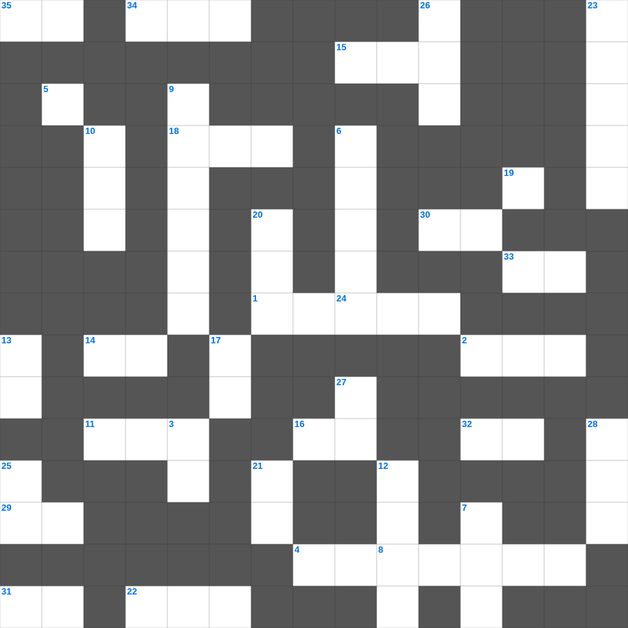

여호수아: 여리고 성
📌 서비스 정의
십자가로세로는 교회 주보와 주일학교에서 사용할 수 있는 성경 기반 가로세로 퍼즐 서비스입니다. 성경 인물, 사건, 핵심 구절을 바탕으로 제작되었습니다. 온라인 풀이 및 인쇄 기능을 제공합니다.
📖 여호수아란?
여호수아는 모세의 후계자 여호수아가 이스라엘을 이끌어 가나안 땅을 정복하고 지파별로 땅을 나누는 과정을 기록합니다. 총 24장입니다.
📚 여호수아의 주요 사건·주제
요단강을 건넘 · 여리고성 함락 · 아이성 전투와 아간 사건 · 기브온 동맹과 해가 멈춘 전쟁 · 지파별 땅 분배
오늘은 여호수아의 주요 내용을 담은 여호수아 주일학교 퀴즈를 준비했습니다. 총 35개의 힌트가 있으며, 주일학교 교재나 성경공부 자료로 활용하기 좋습니다. 무료로 즐기는 여호수아 가로세로 퍼즐을 지금 바로 풀어보세요!

📝 가로 힌트
1. 모세가 물을 낼 때 사용한 도구
2. 여호수아가 요단강을 건널 때 앞세운 것
4. 선한 사람이 강도 만난 자를 도와준 이야기
5. 야곱이 베개로 삼았던 것
11. 솔로몬이 성전 건축을 위해 백향목을 가져온 곳
14. 장래에 이루어질 좋은 일을 기다리는 마음
15. 예수님이 무화과나무를 저주하신 곳 근처
16. 세례를 주는 물의 영적 의미
18. 죽은 지 나흘 만에 살아난 사람
19. 낮을 주관하게 하신 큰 광명체
22. 예수님의 제자 수
24. 메시아의 탄생을 예언한 평화의 선지자
29. 영접하는 자 곧 그 이름을 믿는 자들에게는 하나님의 이것이 되는 권세
30. 곡식으로 드리는 제사
31. 진리의 이것 띠
32. 우리가 선을 행하되 이것하지 말지니
33. 나는 마음이 이것하고 겸손하니
34. 바울이 아고라에서 복음을 전한 도시
35. 물고기 배 속에서 회개한 선지자
📝 세로 힌트
3. 안식일에 밀 이삭을 잘라 먹은 제자들
6. 언약궤 안에 들어있는 아론의 물건
7. 바울이 로마로 가다 난파된 섬
8. 죄의 삯은 이것이요
9. 성경 66권을 통칭하는 말
10. 하나님의 보좌 앞 일곱 등불
12. 성령님이 우리 곁에서 돕는 분이라는 뜻
13. 하나님의 거룩한 성품
17. 하나님을 믿고 죄를 씻어 영생을 얻는 일
20. 알곡과 이것의 비유
21. 새 예루살렘 성의 열두 문 재질
23. 이스라엘이 바벨론으로 끌려간 사건
25. 선한 이것은 양들을 위하여 목숨을 버리거니와
26. 사자 굴에서도 살아남은 사람
27. 오직 의인은 이것으로 말미암아 살리라
28. 너희는 여호와를 만날 만한 때에 이것하라
🧩 이 퍼즐에서 배우는 내용
이 퍼즐은 여호수아: 여리고 성의 핵심 단어와 개념을 자연스럽게 복습할 수 있도록 구성되었습니다. 주일학교 수업이나 개인 성경공부에서 학습 내용을 점검하는 용도로 바로 활용할 수 있습니다.
🧑🏫 교회 교육 자료 활용
이 퍼즐은 주일학교 교재 추천 자료로 활용할 수 있고, 주일학교 주보에 넣기 좋은 분량으로 구성되어 있습니다. 수업용 주일학교 교안에 활동지로 붙이거나, 예배 후 복습용 주일학교 공과교재로 바로 사용할 수 있습니다.
🏷️ 키워드
여호수아 주일학교 퀴즈, 여호수아, 십자가로세로, 성경퀴즈, 말씀퀴즈, 가로세로퍼즐, 주일학교 교재 추천, 주일학교 주보, 주일학교 교안, 주일학교 공과교재